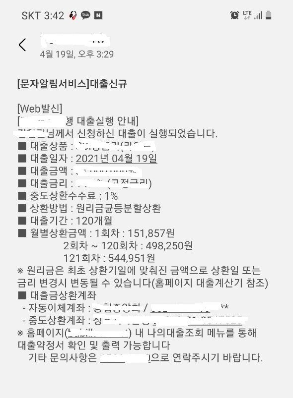
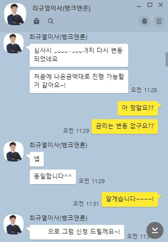

[직장인대출] 최규열 이사님은 짱! [신랑 대출후기^-^!]
이름 : 행복한복지사 / 직장인
재직기간 : 1년 0개월
사대보험가입여부 : 가입
소득 : 연 2320만원 정도
채무내역 : 없음
필요서류 : 건강보험득실확인서, 건강보험납부확인서, 신분증
신랑걸로 대출받아서 후기 남기게 될줄 몰랐는데 이렇게 남길 수 있게 되어 기쁘네요^-^
일단 저희 신랑은 기존대출은 없지만, 공공기록삭제로 인해 신용이 많이 오른 상태로
올 초에 대출상담을 진행하였었지만 부득이하게 직장 재직전화가 되지 않아 어려움이 있던 상태였습니다.
할 수 없이 진행을 하지 못하고 이사님께서 신용카드 발급하여 사용을 해보라고 권유 해 주셔서
카드 발급하고 한참 사용을 많이 했었습니다.
그런 덕분인지 신용점수도 많이 오르고 해서 혹시나 대출을 받을 수 있을 까 하여 상담요청 하였더니
흔쾌히 받아주시고 알아봐주셔서 진행을 해본 결과 직장인 한도까지 나온다고 해서
더 좋은곳으로 알아보자고 하여 진행하였더니 더 좋은 조건으로 나와 대출을 받은 케이스 입니다.
어려운 상황에서 본인일처럼 생각하고 도움주시고, 믿음이 가도록 진행 도와주셔서 후기를 안남길 수가 없어 이렇게 남깁니다.
이사님, 너무너무 감사드리고 또 감사드립니다!^^
매번 이사님을 통해 좋은결과 받을 수 있어 영광이고, 앞으로도 잘 부탁드립니다^^*

